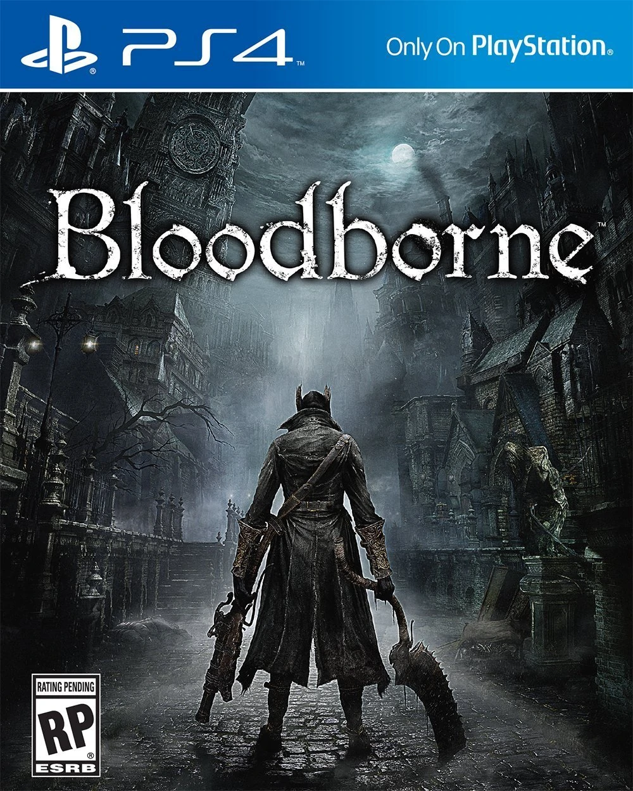

EL juego: Bloodborne
Bloodborne es un videojuego de rol de acción dirigido por Hidetaka Miyazaki, desarrollado por From Software y JapanStudio distribuido por Sony Computer Entertainment para la plataforma de PlayStation 4. El videojuego sigue las acciones del personaje del jugador, el Cazador, a través de Yharnam, una ciudad ficticia de estilo victoriano, cuyos habitantes han sido afectados con una enfermedad de transmisión sanguínea anormal. Al despertar en Yharnam durante la noche de «la caza» tras recibir un tratamiento de la conocida «sangre milagrosa», el Cazador busca algo conocido solo como paleblood ("sangre pálida" en español) para terminar la cacería.
El videojuego cuenta con una vista en tercera persona y su jugabilidad se enfoca en el combate basado en armas y la exploración. Los jugadores luchan contra enemigos bestiales, entre ellos jefes, usando elementos tales como armas blancas y de fuego, viajando a través de la historia, explorando las diferentes áreas del videojuego, interaccionando con los PnJs, además de descubrir y desentrañar los numerosos misterios de ese mundo.
Fue anunciado oficialmente en el evento Electronic Entertainment Expo 2014 de Sony el 9 de junio de 2014, siendo publicado finalmente de manera internacional a finales de marzo de 2015 recibiendo aclamación de la crítica especializada. Muchos críticos aplaudieron la atmósfera y aspecto visual del videojuego, su diseño de mundo interconectado, el diseño de los personajes, en particular el de los enemigos, el desafiante juego de ritmo rápido, la historia intrigante y la banda sonora, que algunos incluso promocionan como «gloriosa». Inconvenientes iniciales de frame rate y extensos tiempos de carga, sin embargo causaron que el videojuego generara algunas críticas. En abril de 2015, el videojuego había vendido más de un millón de copias.
Ha sido condecorado con el Premio de Excelencia (compartido con otros 14 títulos), otorgado por la revista Famitsū de la distribuidora Enterbrain a aquellos videojuegos lanzados en Japón entre el 1 de enero y el 31 de diciembre de 2015.